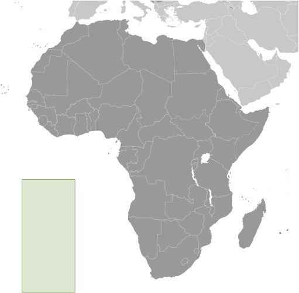
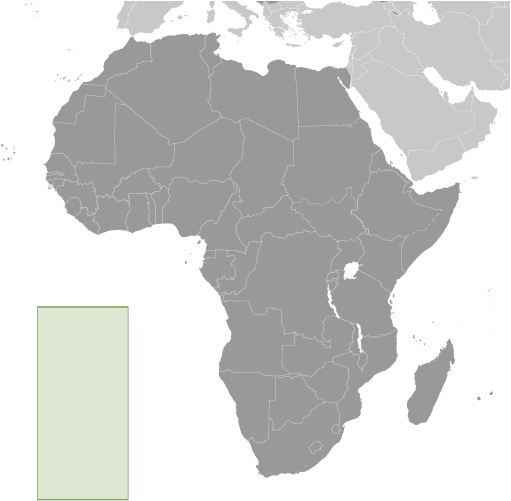

Africa :: SAINT HELENA, ASCENSION, AND TRISTAN DA CUNHA
Introduction :: SAINT HELENA, ASCENSION, AND TRISTAN DA CUNHA
-
Saint Helena is a British Overseas Territory consisting of Saint Helena and Ascension Islands, and the island group of Tristan da Cunha.Saint Helena: Uninhabited when first discovered by the Portuguese in 1502, Saint Helena was garrisoned by the British during the 17th century. It acquired fame as the place of Napoleon BONAPARTE's exile from 1815 until his death in 1821, but its importance as a port of call declined after the opening of the Suez Canal in 1869. During the Anglo-Boer War in South Africa, several thousand Boer prisoners were confined on the island between 1900 and 1903.Saint Helena is one of the most remote populated places in the world. The British Government committed to building an airport on Saint Helena in 2005. After more than a decade of delays and construction, a commercial air service to South Africa via Namibia was inaugurated in October of 2017. The weekly service to Saint Helena from Johannesburg via Windhoek in Namibia takes just over six hours (including the refueling stop in Windhoek) and replaces the mail ship that had made a five-day journey to the island every three weeks.Ascension Island: This barren and uninhabited island was discovered and named by the Portuguese in 1503. The British garrisoned the island in 1815 to prevent a rescue of Napoleon from Saint Helena. It served as a provisioning station for the Royal Navy's West Africa Squadron on anti-slavery patrol. The island remained under Admiralty control until 1922, when it became a dependency of Saint Helena. During World War II, the UK permitted the US to construct an airfield on Ascension in support of transatlantic flights to Africa and anti-submarine operations in the South Atlantic. In the 1960s the island became an important space tracking station for the US. In 1982, Ascension was an essential staging area for British forces during the Falklands War. It remains a critical refueling point in the air-bridge from the UK to the South Atlantic.The island hosts one of four dedicated ground antennas (the others are on Diego Garcia (British Indian Ocean Territory), Kwajalein (Marshall Islands), and at Cape Canaveral, Florida (US)) that assist in the operation of the Global Positioning System (GPS) navigation system. NASA and the US Air Force also operate a Meter-Class Autonomous Telescope (MCAT) on Ascension as part of the deep space surveillance system for tracking orbital debris, which can be a hazard to spacecraft and astronauts.Tristan da Cunha: The island group consists of Tristan da Cunha, Nightingale, Inaccessible, and Gough Islands. Tristan da Cunha, named after its Portuguese discoverer (1506), was garrisoned by the British in 1816 to prevent any attempt to rescue Napoleon from Saint Helena. Gough and Inaccessible Islands have been designated World Heritage Sites. South Africa leases a site for a meteorological station on Gough Island.
Geography :: SAINT HELENA, ASCENSION, AND TRISTAN DA CUNHA
-
islands in the South Atlantic Ocean, about midway between South America and Africa; Ascension Island lies 1,300 km (800 mi) northwest of Saint Helena; Tristan da Cunha lies 4,300 km (2,700 mi) southwest of Saint HelenaSaint Helena: 15 57 S, 5 42 WAscension Island: 7 57 S, 14 22 WTristan da Cunha island group: 37 15 S, 12 30 WAfricatotal: 394 sq kmland: Saint Helena Island 122 sq km; Ascension Island 88 sq km; Tristan da Cunha island group 184 sq km (includes Tristan (98 sq km), Inaccessible, Nightingale, and Gough islands)water: 0 sq kmcountry comparison to the world: 204slightly more than twice the size of Washington, DC0 kmSaint Helena: 60 kmAscension Island: NATristan da Cunha (island only): 34 kmterritorial sea: 12 nmexclusive fishing zone: 200 nmSaint Helena: tropical marine; mild, tempered by trade windsAscension Island: tropical marine; mild, semi-aridTristan da Cunha: temperate marine; mild, tempered by trade winds (tends to be cooler than Saint Helena)the islands of this group are of volcanic origin associated with the Atlantic Mid-Ocean RidgeSaint Helena: rugged, volcanic; small scattered plateaus and plainsAscension: surface covered by lava flows and cinder cones of 44 dormant volcanoes; terrain rises to the eastTristan da Cunha: sheer cliffs line the coastline of the nearly circular island; the flanks of the central volcanic peak are deeply dissected; narrow coastal plain lies between The Peak and the coastal cliffsmean elevation: NAelevation extremes: lowest point: Atlantic Ocean 0 mhighest point: Queen Mary's Peak on Tristan da Cunha 2,060 m; Green Mountain on Ascension Island 859 m; Mount Actaeon on Saint Helena Island 818 mfish, lobsteragricultural land: 30.8%arable land 10.3%; permanent crops 0%; permanent pasture 20.5%forest: 5.1%other: 64.1% (2011 est.)0 sq km (2012)Saint Helena - population is concentrated in and around the capital Jamestown in the northwest, with another significant cluster in the interior Longwood area; Ascension - largest settlement, and location of most of the population, is Georgetown; Tristan da Cunha - most of the nearly 300 inhabitants live in the northern coastal town of Edinburgh of the Seven Seasactive volcanism on Tristan da Cunhavolcanism: the island volcanoes of Tristan da Cunha (2,060 m) and Nightingale Island (365 m) experience volcanic activity; Tristan da Cunha erupted in 1962 and Nightingale in 2004development threatens unique biota on Saint HelenaSaint Helena harbors at least 40 species of plants unknown elsewhere in the world; Ascension is a breeding ground for sea turtles and sooty terns; Queen Mary's Peak on Tristan da Cunha is the highest island mountain in the South Atlantic and a prominent landmark on the sea lanes around southern Africa
People and Society :: SAINT HELENA, ASCENSION, AND TRISTAN DA CUNHA
-
7,828note: Saint Helena's statistical agency estimated the enumerated national population (including Ascension Island and Tristan da Cuhna) to be 5,901 in 2016, according to the 2016 census; only Saint Helena, Ascension, and Tristan da Cunha islands are inhabited, none of the other nearby islands/islets (July 2017 est.)country comparison to the world: 225noun: Saint Helenian(s)adjective: Saint Heleniannote: referred to locally as "Saints"African descent 50%, white 25%, Chinese 25%EnglishProtestant 75.9% (includes Anglican 68.9, Baptist 2.1%, Seventh Day Adventist 1.8%, Salvation Army 1.7%, New Apostolic 1.4%), Jehovah's Witness 4.1%, Roman Catholic 1.2%, other 2.5% (includes Baha'i), unspecified 0.8%, none 6.1%, no response 9.4%note: data represent Saint Helena only (2016 est.)The vast majority of the population of Saint Helena, Ascension, and Tristan da Cunha live on Saint Helena. Ascension has no indigenous or permanent residents and is inhabited only by persons contracted to work on the island (mainly with the UK and US military or in the space and communications industries) or their dependents, while Tristan da Cunha – the main island in a small archipelago – has fewer than 300 residents. The population of Saint Helena consists of the descendants of 17th century British sailors and settlers from the East India Company, African slaves, and indentured servants and laborers from India, Indonesia, and China. Most of the population of Ascension are Saint Helenians, Britons, and Americans, while that of Tristan da Cunha descends from shipwrecked sailors and Saint Helenians.Change in Saint Helena’s population size is driven by net outward migration. Since the 1980s, Saint Helena’s population steadily has shrunk and aged as the birth rate has decreased and many working-age residents left for better opportunities elsewhere. The restoration of British citizenship in 2002 accelerated family emigration; from 1998 to 2008 alone, population declined by about 20%.In the last few years, population has experienced some temporary growth, as foreigners and returning Saint Helenians, have come to build an international airport, but numbers are beginning to fade as the project reaches completion and workers depart. In the long term, once the airport is fully operational, increased access to the remote island has the potential to boost tourism and fishing, provide more jobs for Saint Helenians domestically, and could encourage some ex-patriots to return home. In the meantime, however, Saint Helena, Ascension, and Tristan da Cunha have to contend with the needs of an aging population. The elderly population of the islands has risen from an estimated 9.4% in 1998 to 20.4% in 2016.0-14 years: 15.97% (male 637/female 613)15-24 years: 12.19% (male 486/female 468)25-54 years: 43.89% (male 1,701/female 1,735)55-64 years: 12.83% (male 517/female 487)65 years and over: 15.13% (male 604/female 580) (2017 est.)total: 41.9 yearsmale: 42 yearsfemale: 41.9 years (2017 est.)country comparison to the world: 350.18% (2017 est.)country comparison to the world: 1839.6 births/1,000 population (2017 est.)country comparison to the world: 2007.8 deaths/1,000 population (2017 est.)country comparison to the world: 1000 migrant(s)/1,000 population (2017 est.)country comparison to the world: 95Saint Helena - population is concentrated in and around the capital Jamestown in the northwest, with another significant cluster in the interior Longwood area; Ascension - largest settlement, and location of most of the population, is Georgetown; Tristan da Cunha - most of the nearly 300 inhabitants live in the northern coastal town of Edinburgh of the Seven Seasurban population: 39.5% of total population (2017)rate of urbanization: 0.96% annual rate of change (2015-20 est.)JAMESTOWN (capital) 1,000 (2014)at birth: 1.05 male(s)/female0-14 years: 1.04 male(s)/female15-24 years: 1.05 male(s)/female25-54 years: 0.98 male(s)/female55-64 years: 1.09 male(s)/female65 years and over: 1.04 male(s)/femaletotal population: 1.02 male(s)/female (2016 est.)total: 13.3 deaths/1,000 live birthsmale: 15.7 deaths/1,000 live birthsfemale: 10.7 deaths/1,000 live births (2017 est.)country comparison to the world: 107total population: 79.6 yearsmale: 76.7 yearsfemale: 82.7 years (2017 est.)country comparison to the world: 451.59 children born/woman (2017 est.)country comparison to the world: 184NANANA
Government :: SAINT HELENA, ASCENSION, AND TRISTAN DA CUNHA
-
conventional long form: Saint Helena, Ascension, and Tristan da Cunhaconventional short form: noneetymology: Saint Helena was discovered in 1502 by Galician navigator Joao da NOVA, sailing in the service of the Kingdom of Portugal, who named it "Santa Helena"; Ascension was named in 1503 by Portuguese navigator Afonso de ALBUQUERQUE who sighted the island on the Feast Day of the Ascension; Tristan da Cunha was discovered in 1506 by Portuguese explorer Tristao da CUNHA who christened the main island after himself (the name was subsequently anglicized)overseas territory of the UKparliamentary democracy (Legislative Council); limited self-governing overseas territory of the UKname: Jamestowngeographic coordinates: 15 56 S, 5 43 Wtime difference: UTC 0 (5 hours ahead of Washington, DC, during Standard Time)3 administrative areas; Ascension, Saint Helena, Tristan da Cunhanone (overseas territory of the UK)Birthday of Queen ELIZABETH II, third Monday in April (1926)several previous; latest effective 1 September 2009 (The St. Helena, Ascension and Tristan da Cunha Constitution Order 2009) (2016)English common law and local statutessee United Kingdom18 years of agechief of state: Queen ELIZABETH II (since 6 February 1952)head of government: Governor Lisa PHILLIPS (since 25 April 2016)cabinet: Executive Council consists of the governor, 3 ex-officio officers, and 5 elected members of the Legislative Councilelections/appointments: none; the monarchy is hereditary; governor appointed by the monarchnote: the constitution order provides for an administrator for Ascension and Tristan da Cunha appointed by the governordescription: unicameral Legislative Council (17 seats including the speaker and deputy speaker; 12 members directly elected in a single countrywide constituency by simple majority vote and 3 ex-officio members - the chief secretary, financial secretary, and attorney general; members serve 4-year terms)note: the Constitution Order provides for separate Island Councils for both Ascension and Tristan da Cunhaelections: last held on 26 July 2017 (next to be held in 2021)election results: percent of vote - NA; seats by party - independent 12highest resident court(s): Court of Appeal (consists of the court president and 2 justices); Supreme Court (consists of the chief justice - a non-resident - and NA judges); note - appeals beyond the Court of Appeal are heard by the Judicial Committee of the Privy Council (in London)judge selection and term of office: Court of Appeal and Supreme Court justices appointed by the governor acting upon the instructions from a secretary of state acting on behalf of Queen ELIZABETH II; justices of both courts appointed until retirement at age 70 but terms can be extendedsubordinate courts: Magistrate's Court; Small Claims Court; Juvenile Courtnoneprivate sector; unionsUPUnone (overseas territory of the UK)none (overseas territory of the UK)blue with the flag of the UK in the upper hoist-side quadrant and the Saint Helenian shield centered on the outer half of the flag; the upper third of the shield depicts a white plover (wire bird) on a yellow field; the remainder of the shield depicts a rocky coastline on the left, offshore is a three-masted sailing ship with sails furled but flying an English flagSaint Helena plover (bird)note: as a territory of the UK, "God Save the Queen" is official (see United Kingdom)
Economy :: SAINT HELENA, ASCENSION, AND TRISTAN DA CUNHA
-
The economy depends largely on financial assistance from the UK, which amounted to about $27 million in FY06/07 or more than twice the level of annual budgetary revenues. The local population earns income from fishing, raising livestock, and sales of handicrafts. Because there are few jobs, 25% of the work force has left to seek employment on Ascension Island, on the Falklands, and in the UK.$31.1 million (FY09/10 est.)country comparison to the world: 227$NANA%$7,800 (FY09/10 est.)country comparison to the world: 153agriculture: NA%industry: NA%services: NA%coffee, corn, potatoes, vegetables; fish, lobster; livestock; timberconstruction, crafts (furniture, lacework, fancy woodwork), fishing, collectible postage stampsNA%2,486 (1998 est.)country comparison to the world: 227agriculture: 6%industry: 48%services: 46% (1987 est.)14% (1998 est.)country comparison to the world: 166NA%lowest 10%: NA%highest 10%: NA%revenues: $8.857 millionexpenditures: $21.76 millionnote: revenue data reflect locally raised revenues only; the budget deficit is resolved by grant aid from the UK (FY06/07 est.)1 April - 31 March4% (2012 est.)country comparison to the world: 164$19 million (2004 est.)country comparison to the world: 213fish (frozen, canned, and salt-dried skipjack, tuna), coffee, handicrafts$20.53 million (2010 est.)country comparison to the world: 221food, beverages, tobacco, fuel oils, animal feed, building materials, motor vehicles and parts, machinery and parts$NASaint Helenian pounds (SHP) per US dollar -0.738 (2016)0.6542 (2015)0.607 (2014 est.)0.6391 (2013 est.)0.63 (2012 est.)
Energy :: SAINT HELENA, ASCENSION, AND TRISTAN DA CUNHA
-
10 million kWh (2015 est.)country comparison to the world: 2169.3 million kWh (2015 est.)country comparison to the world: 2140 kWh (2016 est.)country comparison to the world: 1950 kWh (2016 est.)country comparison to the world: 1998,000 kW (2015 est.)country comparison to the world: 211100% of total installed capacity (2015 est.)country comparison to the world: 180% of total installed capacity (2015 est.)country comparison to the world: 1800% of total installed capacity (2015 est.)country comparison to the world: 2020% of total installed capacity (2015 est.)country comparison to the world: 2030 bbl/day (2016 est.)country comparison to the world: 1920 bbl/day (2014 est.)country comparison to the world: 1880 bbl/day (2014 est.)country comparison to the world: 1870 bbl (1 January 2017 es)country comparison to the world: 1900 bbl/day (2014 est.)country comparison to the world: 19580 bbl/day (2015 est.)country comparison to the world: 2140 bbl/day (2014 est.)country comparison to the world: 19684.68 bbl/day (2014 est.)country comparison to the world: 2110 cu m (2013 est.)country comparison to the world: 1920 cu m (2013 est.)country comparison to the world: 1290 cu m (2013 est.)country comparison to the world: 1800 cu m (2013 est.)country comparison to the world: 1860 cu m (1 January 2014 es)country comparison to the world: 19212,080 Mt (2012 est.)country comparison to the world: 212
Communications :: SAINT HELENA, ASCENSION, AND TRISTAN DA CUNHA
-
total: 2,758subscriptions per 100 inhabitants: 35 (July 2016 est.)country comparison to the world: 211total: 2,499subscriptions per 100 inhabitants: 32 (July 2016 est.)general assessment: can communicate worldwidedomestic: automatic digital networkinternational: country code (Saint Helena) - 290, (Ascension Island) - 247; international direct dialing; satellite voice and data communications; satellite earth stations - 5 (Ascension Island - 4, Saint Helena - 1) (2010)Saint Helena has no local TV station; 2 local radio stations, one of which is relayed to Ascension Island; satellite TV stations rebroadcast terrestrially; Ascension Island has no local TV station but has 1 local radio station and receives relays of broadcasts from 1 radio station on Saint Helena; broadcasts from the British Forces Broadcasting Service (BFBS) are available, as well as TV services for the US military; Tristan da Cunha has 1 local radio station and receives BFBS TV and radio broadcasts (2007).sh; note - Ascension Island assigned .actotal: 1,800percent of population: 23.1% (July 2016 est.)country comparison to the world: 214South Africa maintains a meteorological station on Gough Island
Transportation :: SAINT HELENA, ASCENSION, AND TRISTAN DA CUNHA
-
VQ-H (2016)2 (2015)country comparison to the world: 232total: 2over 3,047 m: 1 Ascension Island - Wideawake Field (ASI)1,524 to 2,437 m: 1 Saint Helena (HLE); note - weekly commercial air service to South Africa via Namibia commenced on 14 October 2017 (2017)total: 198 km (Saint Helena 138 km, Ascension 40 km, Tristan da Cunha 20 km)paved: 168 km (Saint Helena 118 km, Ascension 40 km, Tristan da Cunha 10 km)unpaved: 30 km (Saint Helena 20 km, Tristan da Cunha 10 km) (2002)country comparison to the world: 210major seaport(s):Saint Helena: JamestownAscension Island: GeorgetownTristan da Cunha: Calshot Harbor (Edinburgh)the new airport on Saint Helena opened for limited operations in July 2016, and the first commercial flight took place on 14 October 2017, marking the start of weekly air service between Saint Helena and South Africa via Namibia; the military airport on Ascension Island is closed to civilian traffic; there is no air connection to Tristan da Cunha and very limited sea connections making it one of the most isolated communities on the planet
Military and Security :: SAINT HELENA, ASCENSION, AND TRISTAN DA CUNHA
-
defense is the responsibility of the UK
Transnational Issues :: SAINT HELENA, ASCENSION, AND TRISTAN DA CUNHA
-
none